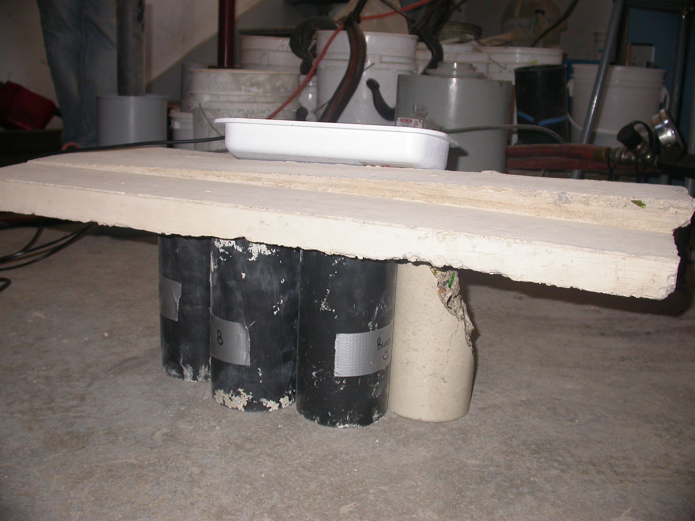

RFID-Scale Devices in Concrete
Overview
RFID-scale sensors are essentially RFID tags equipped with programmable microcontrollers and one or more sensors. They make possible the formation of a new class of sensor networks in which each tag can carry out sensing and computation tasks whenever energy is available and send arbitrary information back to an RFID reader. The blend of capabilities of sensor motes with the compact, batteryless operation of traditional RFID tags make RFID-scale sensor networks ideal for applications such as the monitoring of infrastrucutres. Tags could be deployed once, and there would not be any need for battery replacements or additional wiring.
At SPQR we have experimented embedding RFID-scale sensors in concrete, and we have obtained promising results that suggest the feasibility of the application mentioned above. The pictures below show a few of our embedding experiments.


In our most recent venture (Aug 2011) we embedded two UMass Moos with supercapacitors in concrete steps. They were programed to report readings in response to a few basic commands which include: Report your temperature, say hi, and self-destruct. This was done as a proof of concept to explore to what extent supercapacitors improve the reading range. In fact we could read them from about three meters away, once the supercapacitors were charged. The pictures below show a Moo saying hi (reporting its ID) in the EPC as shown on the left.
Support
Any opinions, findings, and conclusions or recommendations expressed in these materials are those of the author(s) and do not necessarily reflect the views of the sponsors.
- NSF: grants CNS-0520729, CNS-0627529, CNS-0845874, CNS-0923313